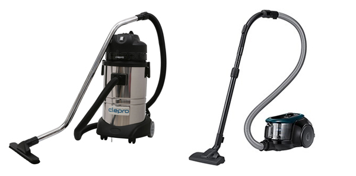
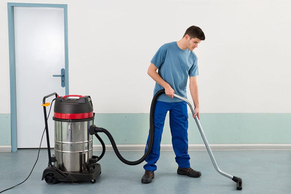
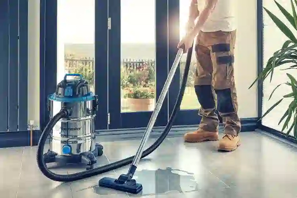
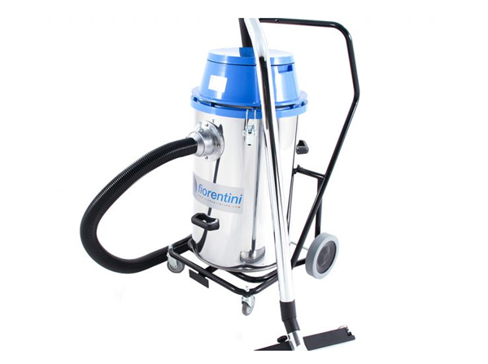
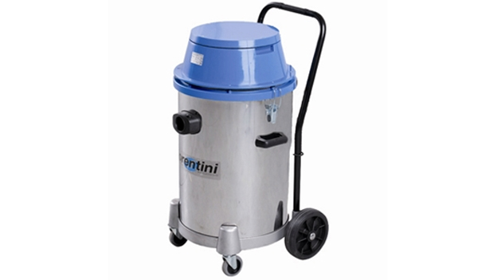
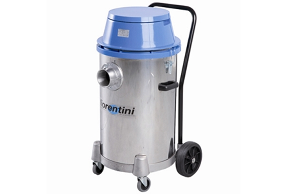
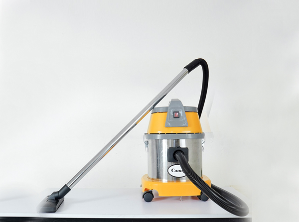

Có nên mua máy hút bụi công nghiệp cho gia đình?
Ngoài các loại máy hút bụi thông thường, trên thị trường hiện nay còn xuất hiện những chiếc máy hút bụi công nghiệp với hiệu suất vượt trội hơn rất nhiều. Vậy, liệu có nên mua máy hút bụi công nghiệp cho gia đình hay không? Những dòng máy này thường được sử dụng rộng rãi tại các xưởng sản xuất, nhà máy hay các công trình xây dựng, giúp cho quá trình làm sạch diễn ra nhanh chóng và hiệu quả hơn bao giờ hết. Tuy nhiên, nếu bạn muốn mua máy hút bụi cho gia đình thì hãy cùng cân nhắc và xem qua thông tin trong bài viết sau.
Sự khác biệt giữa máy hút bụi công nghiệp và máy hút bụi gia đình

Giải đáp có nên mua máy hút bụi công nghiệp cho gia đình hay không
Máy hút bụi gia đình và máy hút bụi công nghiệp đều là hai loại thiết bị được sản xuất nhằm phục vụ nhu cầu làm sạch của con người. Tuy nhiên, chúng có thiết kế và đặc điểm khác nhau, phù hợp với các môi trường sử dụng khác nhau. Dưới đây là một số điểm để phân biệt giữa máy hút bụi gia đình và máy hút bụi công nghiệp:
|
Tiêu chí |
Máy hút bụi gia đình |
Máy hút bụi công nghiệp |
|
Kích thước và trọng lượng |
Kích thước nhỏ gọn, trọng lượng nhẹ. Dễ dàng di chuyển và sử dụng trong môi trường gia đình. |
Lớn hơn và nặng hơn. Thích hợp cho không gian rộng lớn và yêu cầu di chuyển ít. |
|
Khả năng làm việc liên tục |
Khó có thể hoạt động liên tục trong thời gian dài, cần nghỉ ngơi sau một khoảng thời gian. |
Có thể hoạt động liên tục trong môi trường bụi bẩn mà không bị quá tải hay hỏng hóc. |
|
Hiệu suất hút |
Hiệu suất hút thấp hơn, phù hợp với các loại bụi bẩn nhẹ và nhỏ trong gia đình. |
Hiệu suất hút mạnh mẽ hơn, có thể hút nhiều loại bụi bẩn và rác thải, kể cả chất lỏng và bụi mịn. |
|
Khả năng làm sạch |
Phù hợp cho việc làm sạch các bề mặt thông thường trong gia đình như sàn gạch, thảm và ngóc ngách nhỏ. |
Thích ứng với nhiều loại bề mặt và vị trí khác nhau trong môi trường công nghiệp hoặc thương mại, như sàn bê tông, khu vực sản xuất và kho bãi. |
|
Giá thành |
Thường có giá thành thấp hơn, phù hợp với ngân sách của đa số gia đình. |
Giá thành cao hơn do hiệu suất và độ bền cao, phù hợp với các doanh nghiệp hoặc công trình lớn. |
|
Ứng dụng |
Thích hợp cho các công việc làm sạch hàng ngày trong gia đình như hút bụi trên sàn, thảm và các khu vực nhỏ. |
Thích hợp cho các môi trường công nghiệp, thương mại hoặc các công việc cần làm sạch diện tích lớn và xử lý nhiều loại bụi bẩn khác nhau. |
Nhìn chung, máy hút bụi gia đình và máy hút bụi công nghiệp đều có mục đích và tính năng riêng biệt để đáp ứng các nhu cầu sử dụng khác nhau. Máy hút bụi công nghiệp thì thường được dùng cho các công trình có diện tích cần làm sạch lớn như nhà máy, khách sạn, nhà hàng,… Còn máy hút bụi gia đình thì thích hợp cho không gian vệ sinh trong nhà ở. Tuy nhiên, cũng có nhiều người thắc mắc rằng liệu có nên mua máy hút bụi công nghiệp cho gia đình không. Hãy cùng giải đáp qua nội dung tiếp theo.

So sánh máy hút bụi công nghiệp và máy hút bụi gia đình
Đánh giá ưu, nhược điểm máy hút bụi công nghiệp
Việc lựa chọn máy hút bụi công nghiệp hay gia đình phụ thuộc vào nhu cầu và điều kiện cụ thể của từng gia đình. Trước tiên, hãy đánh giá về ưu và nhược điểm của thiết bị máy hút bụi công nghiệp.
Ưu điểm
- Thiết kế đơn giản: Máy hút bụi công nghiệp thường có thiết kế bên ngoài đơn giản, không chú trọng vào tính thẩm mỹ. Điều này giúp tiết kiệm chi phí sản xuất và làm giảm giá thành sản phẩm.
- Cấu tạo đơn giản: Tương tự như máy hút bụi gia đình nhưng tập trung vào bộ phận kỹ thuật bên trong, giúp giảm chi phí mà vẫn đảm bảo hiệu suất hoạt động cao.
- Xử lý đa dạng chất thải: Có khả năng hút và xử lý nhiều loại chất thải khác nhau như chất lỏng kim loại, chất thải gỗ và bụi bẩn do máy móc công nghiệp tạo ra.
- Hiệu quả và tiết kiệm nhân lực: Với khả năng làm sạch hiệu quả, máy hút bụi công nghiệp giúp tiết kiệm thời gian và nhân lực so với việc vệ sinh thủ công, đảm bảo tiến độ công việc.
- Hiệu suất hút cao: Được thiết kế với lực hút mạnh, máy hút bụi công nghiệp có khả năng loại bỏ các chất thải công nghiệp một cách triệt để, tạo ra môi trường sạch sẽ hơn.

Máy hút bụi công nghiệp thường tiêu tốn khá nhiều điện năng
Nhược điểm
- Kém linh hoạt: Thân máy lớn và nặng nề khiến việc di chuyển và vệ sinh các ngóc ngách trở nên khó khăn. Các góc khuất thường không thể làm sạch hoàn toàn bằng máy hút bụi công nghiệp, cần phải vệ sinh thủ công.
- Khó sử dụng ở các không gian hẹp: Đối với các loại máy hút bụi công nghiệp ngồi lái, trọng lượng lớn và điều khiển phức tạp, không linh hoạt trong việc rẽ ngoặt, cần chú ý đến độ an toàn khi di chuyển.
- Giá thành cao: Máy hút bụi công nghiệp có giá thành cao hơn nhiều lần so với máy hút bụi thông thường, không phải gia đình nào cũng có điều kiện để đầu tư.
- Tiêu thụ nhiều điện năng: Công suất lớn đồng nghĩa với việc tiêu tốn nhiều điện năng để vận hành máy, có thể làm tăng chi phí điện hàng tháng.
>>> Tham khảo ngay: TOP 5 máy hút bụi công nghiệp 3000W bán chạy đáng đầu tư
Lợi ích khi sử dụng máy hút bụi công nghiệp
Máy hút bụi công nghiệp được thiết kế với lực hút mạnh mẽ, có khả năng hút được các loại bụi bẩn cứng đầu, chất lỏng và các mảnh vụn lớn mà máy hút bụi gia đình khó xử lý. Với hiệu suất cao, máy hút bụi công nghiệp giúp tiết kiệm thời gian dọn dẹp, tăng hiệu quả công việc và giảm sức lao động thủ công. Máy hút bụi công nghiệp không chỉ hút được bụi và mảnh vụn mà còn có thể xử lý các chất lỏng, làm tăng tính linh hoạt và hiệu quả trong công việc vệ sinh.
Có nên mua máy hút bụi công nghiệp cho gia đình?
Có hay không nên mua máy hút bụi công nghiệp cho gia đình sẽ phụ thuộc vào quy mô nhà ở/văn phòng và tình trạng ngân sách của bạn. Máy hút bụi công nghiệp mang lại hiệu suất cao và khả năng làm sạch mạnh mẽ, nhưng lại có kích thước lớn, tiếng ồn cao và chi phí vận hành đắt đỏ. Nếu bạn có nhu cầu làm sạch diện tích lớn hoặc mức độ bẩn cao và có đủ không gian cũng như ngân sách thì máy hút bụi công nghiệp có thể là lựa chọn tốt. Ngược lại, nếu bạn cần một thiết bị nhỏ gọn, tiện lợi và tiết kiệm, máy hút bụi gia đình sẽ là lựa chọn phù hợp hơn.

Máy hút bụi công nghiệp mini có thể thích hợp dùng trong gia đình
Vì thế, bạn chỉ nên mua máy hút bụi công nghiệp cho gia đình khi:
- Ngôi nhà có diện tích lớn: Nếu bạn sống trong một căn nhà rộng lớn hoặc có nhiều tầng, việc sử dụng máy hút bụi công nghiệp có thể giúp bạn tiết kiệm thời gian và công sức trong việc làm sạch.
- Tình trạng thường xuyên bị bẩn: Nếu ngôi nhà của bạn thường xuyên bị bẩn, ví dụ như có nuôi nhiều thú cưng hoặc gần các khu vực bụi bặm, máy hút bụi công nghiệp với lực hút mạnh mẽ sẽ giúp làm sạch hiệu quả hơn.
- Nhu cầu sử dụng đa năng: Nếu bạn cần một thiết bị có thể làm sạch nhiều loại bề mặt khác nhau, từ sàn nhà, thảm, ghế sofa đến các khu vực khó tiếp cận, máy hút bụi công nghiệp có thể là lựa chọn tốt.
Ngoài ra, trên thị trường hiện có các dòng máy hút bụi công nghiệp loại nhỏ thích hợp cho gia đình có nhà ở với diện tích rộng rãi, nhu cầu làm sạch nhiều hơn thông thường. Máy hút bụi công nghiệp loại nhỏ là giải pháp lý tưởng cho những ai muốn một máy hút bụi mạnh nhưng với kích thước nhỏ gọn hơn. Đây là loại máy hút bụi có thiết kế nhỏ gọn, dung tích bình chứa từ 15L trở lên, công suất từ 1000W.
Tóm lại, nếu chỉ có nhu cầu sử dụng trong gia đình thì bạn nên mua máy hút bụi gia đình nhỏ gọn thay vì máy hút bụi công nghiệp với công suất lớn, dễ tốn điện và kích thước cồng kềnh. Tuy nhiên, trong thường hợp ngôi nhà của bạn quá to hoặc thường xuyên bị bẩn thì có thể tham khảo các dòng máy hút bụi công nghiệp mini để làm sạch không gian sống.
Model máy hút bụi công nghiệp được đánh giá cao
Các model máy hút bụi công nghiệp Fiorentini như F32F1, F46F1 và F97F1 đang có tại ICD đều sở hữu hiệu suất và tính năng nổi bật, phù hợp với nhiều nhu cầu sử dụng khác nhau từ gia đình đến công nghiệp.
Máy hút bụi công nghiệp Fiorentini F32F1
Máy hút bụi công nghiệp Fiorentini F32F1 là một sản phẩm được đánh giá cao về hiệu suất và độ bền. Với công suất 1000W, máy có khả năng hút mạnh mẽ và hiệu quả, phù hợp cho cả nhu cầu sử dụng trong gia đình và công nghiệp nhẹ. Đặc biệt, máy có dung tích bình chứa lên đến 30 lít, giúp giảm tần suất đổ rác, rất tiện lợi cho các gia đình lớn hoặc những nơi có diện tích cần làm sạch rộng. Độ ồn của máy ở mức 65 dB, tương đối thấp, không gây nhiều phiền toái trong quá trình sử dụng. Tuy nhiên, máy có kích thước phụ kiện Ø 50 mm, có thể hơi cồng kềnh và khó di chuyển trong không gian nhỏ hẹp.

Mẫu máy hút bụi Fiorentini F32F1 có kích thước vừa phải phù hợp dùng trong gia đình
Thông số kỹ thuật:
- Công suất: 1000W
- Lưu lượng gió: 210 m³/h
- Độ cao hút nước: 2300 mm
- Dung Tích Bình Chứa: 30 lít
- Kích Thước Phụ Kiện: Ø 50 mm
- Thùng Chứa Bụi: Làm bằng Inox
- Độ Ồn: 65 dB
- Bảo Hành: 12 tháng
Máy hút bụi công nghiệp Fiorentini F46F1
Máy hút bụi công nghiệp Fiorentini F46F1 là sản phẩm chất lượng cao xuất xứ từ Italy, được thiết kế để phục vụ các môi trường công nghiệp và thương mại như nhà máy, xí nghiệp, văn phòng, bệnh viện và dịch vụ vệ sinh công nghiệp. Với công suất mạnh mẽ từ hai motor mỗi motor 1000W và dung tích thùng chứa lên tới 60 lít, máy có khả năng hút mạnh mẽ và hiệu quả.

Máy hút bụi Fiorentini F46F1 có thể được sử dụng cho khuôn viên sân vườn gia đình
Tuy nhiên, với trọng lượng 20kg và kích thước lớn, máy hút bụi công nghiệp này khi sử dụng trong gia đình sẽ tương đối cồng kềnh và khó di chuyển trong không gian nhỏ hẹp. Vì vậy, máy có thể được sử dụng để vệ sinh sân vườn hoặc hãy đảm bảo ngôi nhà của bạn là tương đối lớn cho dòng máy hút bụi cỡ to này.
Thông số kỹ thuật:
- Điện áp: 220V/50Hz
- Công suất motor: 2x1000W (2 motor)
- Dây điện: 15m
- Dung tích thùng chứa: 60 lít
- Xuất xứ: Italy
- Cân nặng: 20kg
- Di chuyển trên 04 bánh xe quay được 180 độ
Máy hút bụi công nghiệp Fiorentini F97F1
Máy hút bụi – nước Fiorentini F97F1 là thiết bị đa dụng với thân máy bằng inox không rỉ, đảm bảo độ bền và tuổi thọ cao. Thiết kế di chuyển trên bốn bánh xe quay 180 độ giúp máy dễ dàng di chuyển trên mọi địa hình. Mặc dù với công suất cao và kích thước lớn, máy hút bụi này có thể vượt quá so với nhu cầu làm sạch thông thường của gia đình. Nhưng xét những gia đình sở hữu biệt thự rộng lớn, khuôn viên to cùng diện tích ngôi nhà đủ rộng thì có thể tham khảo dòng máy này.

Máy hút bụi Fiorentini F97F1 thích hợp dùng cho gia đình có nhà ở diện tích lớn
Thông số kỹ thuật:
- Công suất động cơ: 3000W (3 motor x 1000W)
- Lưu lượng hút: 425 m³/h
- Độ nâng nước: 2500 mm
- Dung tích thùng chứa: 75 lít
- Phụ kiện ống hút: Ø50
- Chất liệu thùng chứa: Inox
- Độ ồn: 81db
- Kích thước máy: 65x60x95 mm
- Trọng lượng máy: 23 kg
- Phụ tùng kèm theo: Ống nhún và họng hút cỡ lớn
Lưu ý khi chọn mua máy hút bụi công nghiệp cho gia đình
Nếu thật sự có nhu cầu cần mua máy hút bụi công nghiệp để dùng trong gia đình, hãy đảm bảo rằng bạn sẽ có một sản phẩm phù hợp với điều kiện sử dụng cụ thể. Hãy xem xét những yếu tố sau:
- Đánh giá diện tích và loại bề mặt bạn sẽ làm sạch để chọn máy có công suất và dung tích phù hợp.
- Xác định loại bụi bẩn cần làm sạch (bụi mịn, rác lớn, chất lỏng…) để chọn máy có chức năng tương ứng.
- Chọn máy có công suất hút vừa đủ vì công suất càng cao, máy càng tiêu thụ nhiều điện năng.
- Đánh giá hiệu suất tổng thể của máy bao gồm khả năng hút bụi khô và ướt, khả năng làm sạch trên nhiều bề mặt khác nhau.
- Đối với gia đình, máy hút bụi công nghiệp loại nhỏ với dung tích bình chứa từ 15L trở lên thường là đủ. Dung tích quá lớn có thể không cần thiết và gây khó khăn trong việc di chuyển.

Cần chọn mua máy hút bụi có độ ổn thấp khi sử dụng trong gia đình
- Máy hút bụi công nghiệp thường có độ ồn cao hơn so với máy hút bụi gia đình. Chọn máy có mức độ ồn chấp nhận được để không gây ảnh hưởng đến sinh hoạt gia đình.
- Chọn máy có thiết kế nhỏ gọn và trọng lượng nhẹ để dễ dàng di chuyển và lưu trữ.
- Máy cần có bánh xe linh hoạt và tay cầm tiện lợi để di chuyển dễ dàng giữa các phòng và tầng nhà.
- Kiểm tra các phụ kiện đi kèm như đầu hút đa năng, đầu hút khe, chổi quét,… để đảm bảo máy có thể làm sạch hiệu quả ở nhiều vị trí khác nhau.
- Chọn máy có hệ thống lọc bụi tốt, có thể lọc sạch không khí và ngăn ngừa sự phát tán của bụi mịn và vi khuẩn.
- Xác định ngân sách bạn có thể chi trả cho máy hút bụi. Máy hút bụi công nghiệp thường đắt hơn so với máy hút bụi gia đình, nhưng bạn có thể tìm được các mẫu máy hút bụi công nghiệp loại nhỏ với giá hợp lý.
- Xem xét chi phí vận hành bao gồm điện năng tiêu thụ và chi phí bảo trì để chọn máy phù hợp với khả năng tài chính của gia đình.
Tóm lại, việc quyết định có nên mua máy hút bụi công nghiệp cho gia đình phụ thuộc vào nhu cầu và hoàn cảnh cụ thể của từng gia đình. Máy hút bụi công nghiệp sở hữu nhiều ưu điểm nổi bật. Tuy nhiên, kích thước lớn, trọng lượng nặng và tiếng ồn cao của máy cũng là những yếu tố cần cân nhắc. Nếu bạn đang cân nhắc việc đầu tư vào một chiếc máy hút bụi công nghiệp cho gia đình hoặc doanh nghiệp của mình, hãy liên hệ ngay với chúng tôi qua Hotline 02422009188 để nhận được tư vấn chi tiết và hỗ trợ tốt nhất.
>>> ĐỪNG BỎ LỠ: Bảng giá máy hút bụi công suất lớn 2024
 Tư vấn cách chọn lựa máy chà sàn nhà gia đình
Tư vấn cách chọn lựa máy chà sàn nhà gia đình TOP 5 máy hút bụi công nghiệp 3000W bán chạy đáng đầu tư
TOP 5 máy hút bụi công nghiệp 3000W bán chạy đáng đầu tư